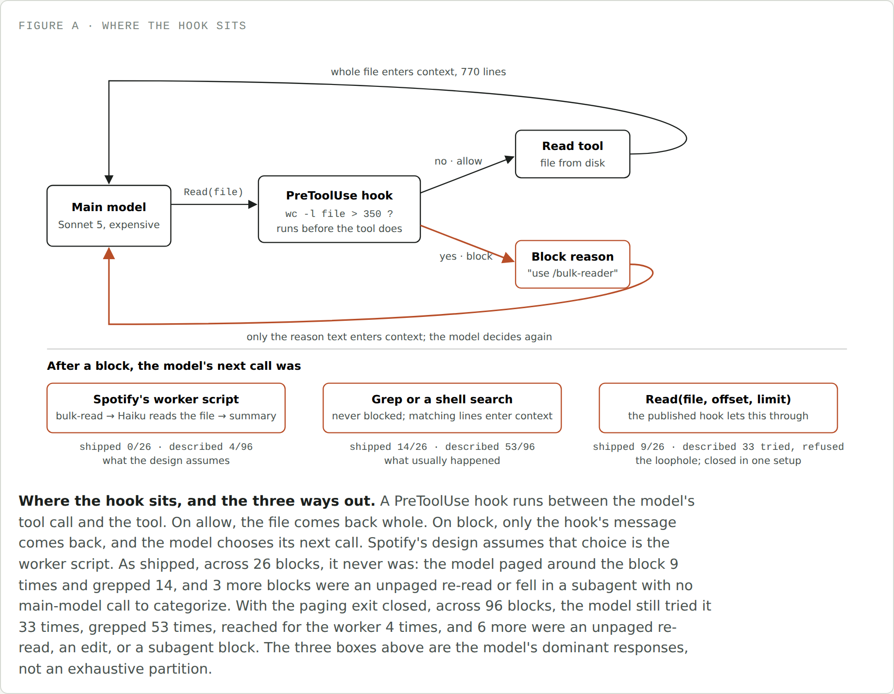

<title>Tokens Are Cheap, Turns Are Not</title>
<meta name="description" content="Spotify published a Claude Code plugin that blocks big file reads and hands them to a cheap model, claiming a 90% token cut. I rebuilt it on Kafka and measured the bill instead of the tokens.">
<link rel="stylesheet" href="https://fonts.googleapis.com/css2?family=IBM+Plex+Sans:wght@400;500;600&family=IBM+Plex+Mono:wght@400;500&display=swap">
<style>
  :root { --bg:#F5F6F3; --surface:#FFFFFF; --ink:#1B1F1D; --ink-2:#4A5350; --ink-3:#7B857F; --line:#D6DAD3; --stock:#0A9385; --hook:#B84E28; --soft:#ECEEE9; --tip:#EDF3EC; --tip-b:#5B8A6B; }
  @media (prefers-color-scheme: dark) { :root:not([data-theme="light"]) { --bg:#141816; --surface:#1C211E; --ink:#E6E9E4; --ink-2:#B4BBB5; --ink-3:#7F8882; --line:#313834; --stock:#1E9A8C; --hook:#C97440; --soft:#232925; --tip:#1B2420; --tip-b:#4E8760; } }
  :root[data-theme="dark"] { --bg:#141816; --surface:#1C211E; --ink:#E6E9E4; --ink-2:#B4BBB5; --ink-3:#7F8882; --line:#313834; --stock:#1E9A8C; --hook:#C97440; --soft:#232925; --tip:#1B2420; --tip-b:#4E8760; }
  * { box-sizing: border-box; }
  body { background:var(--bg); color:var(--ink); font-family:"IBM Plex Sans",system-ui,sans-serif; font-size:17px; line-height:1.65; padding-block:44px 90px; padding-inline:20px; }
  main { max-width:700px; margin:0 auto; }
  .kicker { font-family:"IBM Plex Mono",monospace; font-size:0.78rem; letter-spacing:0.08em; text-transform:uppercase; color:var(--ink-3); margin:0 0 10px; }
  h1 { font-size:2.1rem; line-height:1.2; margin:0 0 6px; letter-spacing:-0.01em; }
  .dek { font-size:1.15rem; color:var(--ink-2); margin:0 0 36px; max-width:56ch; }
  h2 { font-size:1.5rem; margin:56px 0 16px; letter-spacing:-0.005em; }
  h3 { font-size:1.1rem; margin:28px 0 10px; }
  p { margin:0 0 20px; }
  a { color:var(--hook); text-decoration-thickness: 1px; }
  em { font-style: italic; }
  .lede-em { font-style: normal; font-weight: 600; }
  code { font-family:"IBM Plex Mono",monospace; font-size:0.88em; background:var(--soft); padding:0.1em 0.35em; border-radius:4px; }
  pre.code { background:var(--soft); border-radius:8px; padding:14px 18px; overflow-x:auto; font-family:"IBM Plex Mono",monospace; font-size:0.82em; line-height:1.6; margin:8px 0 20px; color:var(--ink); }
  pre.code code { background:none; padding:0; font-size:1em; }
  pre.code .c { color:var(--ink-3); }
  figure { margin:32px 0; }
  figure img { width:100%; display:block; border:1px solid var(--line); border-radius:8px; background:var(--surface); }
  figcaption { font-family:"IBM Plex Mono",monospace; font-size:0.72rem; letter-spacing:0.05em; text-transform:uppercase; color:var(--ink-3); margin-top:10px; }
  .callout { border-left:3px solid var(--tip-b); background:var(--tip); border-radius:0 8px 8px 0; padding:16px 20px; margin:28px 0; }
  .callout .label { font-family:"IBM Plex Mono",monospace; font-size:0.72rem; letter-spacing:0.06em; text-transform:uppercase; color:var(--tip-b); display:block; margin-bottom:8px; font-weight:600; }
  .callout p:last-child { margin-bottom:0; }
  .callout.hook { border-left-color:var(--hook); }
  .callout.hook .label { color:var(--hook); }
  blockquote.tldr { border:none; margin:24px 0; padding:0 0 0 18px; border-left:2px solid var(--line); font-style:italic; color:var(--ink-2); }
  ul, ol { padding-left: 1.3em; margin: 0 0 20px; }
  li { margin-bottom: 10px; }
  li b { color: var(--ink); }
  .terms b { font-family:"IBM Plex Mono",monospace; font-weight:600; background:none; }
  hr.sec { border:none; border-top:1px solid var(--line); margin:48px 0; }
  .byline { color:var(--ink-3); font-size:0.9rem; margin: -16px 0 40px; }
  @media (max-width: 480px) { h1 { font-size: 1.7rem; } h2 { font-size: 1.3rem; } body { font-size: 16px; } }
</style>

<main>

<p class="kicker">Field dispatch</p>
<h1>Tokens Are Cheap, Turns Are Not</h1>
<p class="dek">Spotify published a Claude Code plugin that blocks the model from reading big files and hands them to a cheap worker instead, claiming a 90% cut in tokens. I rebuilt it on a real repo and measured the bill. The number they reported is real. The bill went up anyway.</p>
<p class="byline">Twenty-one tasks, two Claude Code configurations, 114 sessions on one Java monorepo, three independent sources of telemetry per run.</p>

<p>I feel like everyone's caught wind of the term <em>tokenomics</em> recently. From customer calls to consultants' LinkedIn posts, people are getting more and more cognizant of AI spend and looking for a better way to quantify it. It can't just be priced per question, flat — we have to think about question complexity and model power together, and lately, teams have started measuring that complexity in tokens needed. Makes sense.</p>

<p>That's led a lot of cost-wary teams to start building their own token optimizers. Seeing the trend take off, I wanted to dig into one of these examples myself. Last week, Spotify published a blog post that bounced around Hacker News and Reddit, about a Claude Code plugin claiming a 90% cut in tokens. So in this piece, I'm taking you with me as we rebuild it and look under the hood.</p>

<blockquote class="tldr">TLDR; the token reduction Spotify reported is real on the metric they used: Claude read 90% fewer lines of the big files. The tokens the frontier model was actually billed for went up 23%, and the dollar cost went up about 16%, by half on the tasks where the model actually delegated. Here's what they were trying to solve, what they built, and why the bill went up when I recreated it.</blockquote>

<h2>What Spotify built, and why</h2>

<p><b>The why:</b> the Spotify team noticed a trend in their own Claude Code usage — a huge share of the tokens they were burning went toward tasks that didn't actually need the frontier-level reasoning power they were paying for. Spotify works out of one large monorepo, and inside it, most of that non-reasoning work fell into two buckets:</p>

<ul>
<li><b>Bulk file reads</b>: loading a 700-plus-line file into context just to check a pattern or answer a question about a fraction of it.</li>
<li><b>Templated code generation</b>: writing boilerplate, configs, or scaffolding where the structure is already known.</li>
</ul>

<p>Because Claude Code resends the whole conversation on every request, any large file that's entered context once stays there and keeps getting rebilled on every request after it, however many turns that ends up being. Spotify didn't want to keep paying frontier prices to carry around the parts of a file nobody actually asked about.</p>

<p><b>The what:</b> to fix it, Spotify built a more deterministic workflow for exactly those two task types — send the request to a smaller model to process, and hand Claude Code back only the key context it actually needs. They picked a Gemini model for the worker (other coverage of the post names Gemini 2.5 Flash), reading the large file in full and returning just the parts that matter.</p>

<figure>
  
  <figcaption>Figure A · where the hook sits</figcaption>
</figure>

<p>They were able to implement this deterministic workflow using two key Claude Code features:</p>

<ol>
<li><b>Skills</b>: progressive disclosure of context, loading instructions into the context window only when needed.</li>
<li><b>Hooks</b>: a checkpoint in front of a tool call, able to block or redirect it before the model ever sees the result.</li>
</ol>

<p>In Spotify's case, they built two skills — bulk-reader and code-writer — that get disclosed when a request matches one of the two workflows above. They're really just a set of instructions for how to hand a task off to the cheaper model and what to do with what comes back.</p>

<p>As for hooks, this is how the team put a guardrail on their deterministic workflow. They used a <em>PreToolUse hook</em> that runs before Claude Code lets a <code>Read</code> call through, checking the file's line count first. Over 350 lines, it blocks the call outright and points the model at the bulk-reader skill instead of the raw file. A skill only helps if the model chooses to open it — the hook is what's supposed to force that choice.</p>

<blockquote class="tldr">TLDR; the skill is the manual. The hook is what's supposed to force the model to open it. Whether that actually holds is the seam this whole post pulls on.</blockquote>

<p><b>Their evaluation:</b> Spotify measured the win as tokens avoided: estimate the file's token cost as its character count divided by four, then subtract the size of the summary that comes back instead. The worker's own cost never enters that number at all. That's roughly a 90% drop in tokens sent to the frontier model, and by the ordinary logic of token pricing, fewer tokens to the expensive model reads as a proportionally smaller bill. That equivalence — a token avoided is a dollar saved — is exactly what the rest of this post tests.</p>

<p>That design rests on one assumption: that when the model is refused a read, it does what the hook's message tells it to do. Nothing about a <code>PreToolUse</code> hook enforces that — it can stop one tool call, but it can't stop the model from trying something else on its next turn, and it has no say over what that something else is. Whether the plugin saves anything comes down entirely to what the model reaches for once it's been told no. I wanted to find out, on a real repo, doing real work.</p>

<h2>Our experiment: a framework to copy theirs</h2>

<p><em>Does cutting tokens actually cut cost?</em> That's what the rest of this piece tests, and testing it fairly meant building two things before a single task ran: a corpus with real files in the size band shunt actually targets, and an evaluation that runs the model instead of assuming what it does after a block. I used Apache Kafka, at a pinned commit, as the public stand-in for Mazmanov's large Java monorepo — big enough to have plenty of files over 350 lines for the hook to have real work to do. Every task below runs under two arms: <em>stock</em>, which is Claude Code exactly as installed with nothing added, and a hook arm built from Spotify's own plugin. What follows is what I measured before I trusted either arm's numbers, where I copied Spotify's plugin exactly, the three places I didn't, and why.</p>

<h3>What Spotify's evals actually measure</h3>

<p>Before building anything of my own, I read what ships inside <code>plugins/shunt</code> itself. The plugin carries two eval suites, and neither one does what you'd assume a plugin that changes what Claude Code reads would do: neither ever runs Claude Code.</p>

<p>The first, <code>evals/hook-evals.json</code>, is a unit test for the hook script in isolation. It's 17 cases, each one piping a synthetic file of a given line count straight into <code>check-file-size</code> over stdin and asserting the JSON decision that comes back — <code>allow</code> or <code>block</code> — against what's expected. The line counts it checks cluster right around the threshold on purpose: 100 lines (well under), 350 (the boundary itself), 351 (one line over), 1200, and 5000 (comfortably over). It's a good test of the hook's arithmetic. It says nothing about what happens after a block, because nothing downstream of the hook ever runs.</p>

<p>The second, <code>evals/benchmarks.json</code>, is the one behind Spotify's 90% number. It has four rows, and <code>evals/run.sh</code> scores every one of them by calling <code>scripts/bulk-read</code> or <code>scripts/code-write</code> directly — not through Claude Code, not through a <code>Read</code> tool call, not through the hook. For the three bulk-read rows, the "without shunt" cost is the corpus's character count divided by four, and the "with shunt" cost is the returned summary's character count divided by four — the shell script's own <code>token_estimate()</code> function, applied on both sides of the same subtraction. For the code-generation row, it weights output tokens 5x (the script's comment says output tokens cost about five times input) to price what "without shunt" would have cost in generated output, and scores "with shunt" as a flat zero tokens, because the code gets written straight to a file on disk and Claude never reads it back. The fixtures behind all four rows are small: <code>websocket-handler.ts</code> at 602 lines, <code>user-service.ts</code> at 35, <code>order-service.test.ts</code> at 55. Only the first two rows ever touch the 602-line file, so only rows 1 and 2 clear the 350-line threshold at all — rows 3 and 4 are built entirely out of files the hook would never have blocked in the first place, even if this suite ran them through it, which it doesn't.</p>

<p>Put those two suites together and here's what Spotify actually verified before publishing: that the hook's line-count arithmetic is correct, and that reading a file directly costs more characters than reading a summary of it. Both of those are true and neither one is in dispute. What's missing from both suites is the one step in the whole pipeline that isn't deterministic — what the model does with itself once a <code>Read</code> call comes back refused. A <code>PreToolUse</code> hook can block one tool call; it has no way to make the model's next move be the one the plugin's author intended, and nothing in either eval suite ever puts a model in that position to find out. That's the step carrying the entire 90% claim, and it was assumed, not measured, in Spotify's own tests. We run the model in between.</p>

<blockquote class="tldr">TLDR; Spotify's own evals never run Claude Code. One suite checks the hook's allow/block arithmetic in isolation; the other times a deterministic script call and calls the difference tokens saved. The one non-deterministic step in the whole design — what the model does after it's told no — never appears in either one.</blockquote>

<h3>How one run gets kicked off</h3>

<p>Every one of the 114 sessions starts the same way, and none of it is interactive. The harness is a Python script that copies a pristine Kafka checkout into a fresh directory, drops in one <code>.claude</code> folder, and calls Claude Code in headless mode with the task's prompt as the argument. Claude Code answers, writes its transcript, exits, and the script grades what's left behind. Nobody types anything; there's no terminal session to nudge. What differs between the two arms is only what's inside that <code>.claude</code> folder.</p>

<figure>
  
  <figcaption>Figure B · the setup</figcaption>
</figure>

<p>Here's the layout of the two folders. The stock arm's <code>.claude</code> is a single empty settings file, so Claude Code runs exactly as installed. The hook arm's <code>.claude</code> is Spotify's plugin, copied in as a project-level config instead of a plugin install so the paths resolve inside a throwaway workspace:</p>

<pre class="code">arms/stock/.claude/
└── settings.json                <span class="c"># contains {}</span>

arms/shunt-strict/.claude/
├── settings.json                <span class="c"># the two PreToolUse hooks, below</span>
├── shunt/
│   ├── hooks/check-file-size    <span class="c"># Spotify's, minus the offset exception</span>
│   ├── hooks/check-bash-read    <span class="c"># Spotify's, byte-identical</span>
│   ├── scripts/bulk-read        <span class="c"># Spotify's, byte-identical</span>
│   ├── scripts/code-write       <span class="c"># Spotify's, byte-identical</span>
│   └── scripts/lib/aika.sh      <span class="c"># the Portal call, swapped for Haiku</span>
└── skills/
    ├── bulk-reader/SKILL.md     <span class="c"># Spotify's, script path only</span>
    └── code-writer/SKILL.md     <span class="c"># Spotify's, script path only</span></pre>

<p>The hook arm's <code>settings.json</code> is Spotify's <code>hooks.json</code> with the plugin-root variable swapped for the project-dir one. This is the entire wiring. Two matchers, one script each; Claude Code runs the script before every <code>Read</code> and every <code>Bash</code> call and reads its JSON answer:</p>

<pre class="code">{ "hooks": { "PreToolUse": [
  { "matcher": "Read",
    "hooks": [ { "type": "command",
      "command": "\"$CLAUDE_PROJECT_DIR\"/.claude/shunt/hooks/check-file-size"
    } ] },
  { "matcher": "Bash",
    "hooks": [ { "type": "command",
      "command": "\"$CLAUDE_PROJECT_DIR\"/.claude/shunt/hooks/check-bash-read"
    } ] }
] } }</pre>

<p>And the hook script itself, comments trimmed and the block message wrapped for the page, is short enough to read in full. It gets the proposed tool call on stdin, counts lines, and answers <code>allow</code> or <code>block</code>. The block carries the message the model will see as the tool's result. The only line of Spotify's I removed is the one that said "allow if offset or limit is set" (the sidebar below has why):</p>

<pre class="code">#!/bin/bash
MIN_LINES="${SHUNT_MIN_LINES:-350}"
input=$(cat)
file_path=$(echo "$input" | jq -r '.tool_input.file_path // empty')

if [ -z "$file_path" ] || [ ! -f "$file_path" ]; then
  echo '{"decision": "allow"}'; exit 0
fi

lines=$(wc -l &lt; "$file_path" | tr -d ' ')
if [ "$lines" -le "$MIN_LINES" ]; then
  echo '{"decision": "allow"}'; exit 0
fi

reason="File is ${lines} lines (threshold: ${MIN_LINES}). \
Use the /bulk-reader skill to delegate this read to AiKA \
instead of reading it directly."
echo "{\"decision\": \"block\", \"reason\": \"${reason}\"}"</pre>

<p>Then the call. This is the exact command the harness runs, from inside the workspace, for both arms. The prompt is the task's question, verbatim; the session id is a fresh UUID so nothing carries over from a previous run; permissions are pre-granted so no run ever stalls on a "may I?" prompt; and the JSON output format is what gives back the billed cost and token counts at the end:</p>

<pre class="code">cd "$WORKSPACE"   <span class="c"># fresh Kafka copy at one pinned commit + one .claude folder</span>

CLAUDE_CODE_ENABLE_TELEMETRY=1 \
OTEL_LOGS_EXPORTER=otlp OTEL_METRICS_EXPORTER=otlp OTEL_TRACES_EXPORTER=otlp \
OTEL_EXPORTER_OTLP_ENDPOINT=http://127.0.0.1:4318 OTEL_LOG_TOOL_DETAILS=1 \
CLAUDE_CODE_PROMPT_CACHE_TTL=5m CLAUDE_CODE_SUBAGENT_PROMPT_CACHE_TTL=5m \
SHUNT_RUN_DIR="$RUN_DIR" \
claude -p "$PROMPT" \
  --model claude-sonnet-5 \
  --session-id "$(uuidgen)" \
  --permission-mode acceptEdits \
  --allowedTools "Read,Grep,Glob,Bash,Edit,Write,MultiEdit,Agent,Skill,\
TodoWrite,TaskCreate,TaskUpdate" \
  --max-turns 40 \
  --output-format json</pre>

<p>Three of those environment variables matter to the numbers. The <code>OTEL_*</code> block turns on Claude Code's built-in OpenTelemetry export and points it at a tiny local receiver, which is where the per-request latency and token counts come from. The two <code>CACHE_TTL</code> variables pin the prompt-cache write to the 5-minute rate for the main model, any subagent it spawns, and the worker, so both arms pay one rate (there's a whole paragraph below on why). And <code>SHUNT_RUN_DIR</code> is mine, not Spotify's: it tells the swapped-in worker where to save its own usage JSON so the worker's tokens and dollars end up in the same ledger as the main model's.</p>

<p>When the process exits, the harness collects three things. The JSON on stdout has the final answer, the billed cost, and total token usage. The transcript Claude Code writes under <code>~/.claude/projects</code> has every request and every tool call, including the hook's block messages. The receiver has the OpenTelemetry events. It then diffs the workspace against the pinned commit, so an edit task's changes are captured exactly, and hands everything to the grader. The workspace is deleted. The next run starts from the clean copy again, on the other arm.</p>

<p>If you wanted to try this without any of the harness, the shortest version is: put Spotify's plugin files in a <code>.claude</code> folder at the root of a big repo, add the two hook entries above to <code>.claude/settings.json</code>, and run <code>claude -p "your question" --output-format json</code>. The <code>total_cost_usd</code> field at the end of the output is the number this whole piece is about.</p>

<h3>The rule I followed, and the three places I broke it</h3>

<p>The rule going in was simple: run Spotify's plugin verbatim, and deviate only where there's a stated, specific design flaw — never a stylistic preference, never a guess at what they "probably meant." Every deviation gets written down, with the reason, so a reader can decide for themselves whether it's fair.</p>

<div style="overflow-x:auto; margin:24px 0;">
<table style="width:100%; border-collapse:collapse; font-size:0.92em; line-height:1.5;">
<thead>
<tr>
<th style="text-align:left; padding:6px 12px 10px 0; border-bottom:2px solid var(--line); color:var(--ink-3); font-family:'IBM Plex Mono',monospace; font-size:0.72rem; letter-spacing:0.05em; text-transform:uppercase;">Deviation</th>
<th style="text-align:left; padding:6px 12px 10px; border-bottom:2px solid var(--line); color:var(--ink-3); font-family:'IBM Plex Mono',monospace; font-size:0.72rem; letter-spacing:0.05em; text-transform:uppercase;">What changed</th>
<th style="text-align:left; padding:6px 0 10px 12px; border-bottom:2px solid var(--line); color:var(--ink-3); font-family:'IBM Plex Mono',monospace; font-size:0.72rem; letter-spacing:0.05em; text-transform:uppercase;">Why</th>
</tr>
</thead>
<tbody>
<tr>
<td style="padding:12px 12px 12px 0; border-bottom:1px solid var(--line); vertical-align:top;"><b>(a) The worker</b><br><code>lib/aika.sh</code></td>
<td style="padding:12px; border-bottom:1px solid var(--line); vertical-align:top;">Spotify's Portal call to a hosted Gemini model becomes a call to Haiku, running Spotify's own mode prompt as the system prompt, no tools, temperature 0.2 — one Messages API call when an API key is available. Without one, it falls back to a one-turn headless Claude Code call with <code>--tools ""</code>, so no tool definitions ever enter the worker's own prompt.</td>
<td style="padding:12px 0 12px 12px; border-bottom:1px solid var(--line); vertical-align:top;">I don't have access to Spotify's internal Portal system, so this is the closest same-shape substitute buildable outside it — and it puts the worker's own cost honestly in the ledger instead of hiding it behind someone else's infrastructure. This grid ran on the fallback: the machine it ran on has a Claude subscription and no API key. Measured overhead of that path: 591 input tokens, zero cache writes, $0.0012 for a trivial message. The earlier version of this same substitute, run without <code>--tools ""</code>, carried about 25,000 cache-write tokens of tool definitions on every single call — gone now on both paths.</td>
</tr>
<tr>
<td style="padding:12px 12px 12px 0; border-bottom:1px solid var(--line); vertical-align:top;"><b>(b) The exception</b><br><code>hooks/check-file-size</code>, strict arm only</td>
<td style="padding:12px; border-bottom:1px solid var(--line); vertical-align:top;">The offset/limit exception — any <code>Read</code> call that sets either one sails through no matter how big the file is — is removed, and with it the one sentence in the block message that points the model at it. Every other word of the message is Spotify's.</td>
<td style="padding:12px 0 12px 12px; border-bottom:1px solid var(--line); vertical-align:top;">The hook's own top-of-file comment says its job is to "block full-file reads on large files." An exception that lets any read carrying an offset through, regardless of file size, is a hole in that promise, not a feature of it — and in the pilot, the model used it on every single block. The shipped version, exception intact, ran in that pilot; what it did is the sidebar below. The grid runs the closed version, because that's the hook doing what the post says it does.</td>
</tr>
<tr>
<td style="padding:12px 12px 0 0; vertical-align:top;"><b>(c) Everything else</b><br>skills, <code>check-bash-read</code></td>
<td style="padding:12px 0; vertical-align:top;">File paths only, so the skill scripts resolve inside this evaluation's directory layout instead of Spotify's plugin install.</td>
<td style="padding:12px 0 12px 12px; vertical-align:top;"><code>check-bash-read</code>, both scripts, both skill files' instructional text, and the 350-line threshold itself are byte-identical to what Spotify published. Nothing else in the plugin was touched.</td>
</tr>
</tbody>
</table>
</div>

<p>Here's what deviation (b) looked like in practice, and why closing it wasn't optional once I'd seen it happen:</p>

<div class="callout hook">
<span class="label">Sidebar: the rule I had to remove first</span>
<p>The plugin <a href="https://github.com/spotify/portal-ai-plugins/blob/b5ed620c6850f1ea7327b7cd9d0696aae0bf2d89/plugins/shunt/hooks/check-file-size#L11-L17">as Spotify published it</a> has an exception: a <code>Read</code> call with an offset or a line limit is allowed through even on a file over 350 lines, no matter how big the file actually is. I ran the pilot with that exception intact, and it broke the test before the test could start. Every one of the nine blocks the hook made was followed, on the model's very next call, by a read with an offset — the hook does nothing to that, because from the hook's point of view it isn't the same request. By the end of the run, 655 of the file's 770 lines had entered context anyway, four slices at a time, and the worker was never touched.</p>
<figure style="margin:16px 0 4px;">
  
</figure>
<p>That's a bug in the exception, not a finding about delegation, so I closed it — a file over 350 lines simply cannot be <code>Read</code> by the main model at all, offset or no offset — and ran everything past this point against that version. Every number from here on is the hook doing what the post says it does.</p>
</div>

<blockquote class="tldr">TLDR; the plugin runs verbatim except in three places, all three written down here: the worker becomes Haiku because I don't have Portal access, the strict arm closes a real bypass the published hook leaves open, and everything else — the skills, the Bash-side hook, the threshold — is byte-identical to what Spotify shipped.</blockquote>

<h3>Two hypotheses, and the mechanism claim underneath them</h3>

<p>Spotify's claim splits cleanly into two testable hypotheses, plus one claim about mechanism that has to hold for either of them to matter at all:</p>

<ul>
<li><b>H1 — the case shunt targets.</b> On the workloads the hook is built for, it lowers both frontier tokens and dollar cost, at equal correctness. This is what SB, ND and SC below exist to test. <em>Supported</em> means: the hook run passes at the same rate as stock, tokens reaching the frontier model's context fall, and cost falls on a majority of the paired repetitions.</li>
<li><b>H2 — the case Spotify says it doesn't touch.</b> On workloads the hook wasn't built for, where it still fires because the file happens to be big, correctness doesn't drop and cost doesn't rise. This is what HM below tests. <em>Supported</em> means: pass rate doesn't fall below stock, and cost stays within noise of stock — a cost increase here isn't neutral, it's harm, since nothing about the task justified paying for a delegation attempt in the first place.</li>
<li><b>M — the mechanism claim underneath both.</b> Whatever cost difference shows up is explained by how many requests get sent, not by how many tokens get saved per request. If M holds, cost should track <code>api_requests</code>, not <code>tokens_saved</code> — and that's the relationship every category below, controls included, gets checked against.</li>
</ul>

<p>A task that doesn't sit inside one of these three cells doesn't belong in the grid. That's the actual filter I applied to every task before it got written.</p>

<h3>Five task categories, matched to theirs where theirs gives me something to match</h3>

<p>Twenty-one tasks on Kafka, sorted into five categories. The prefix on a task's id says which one, and every category exists to answer exactly one of the three cells above.</p>

<ul>
<li><b>SB — Spotify's benchmark, one to one (4 tasks).</b> Their own <code>benchmarks.json</code> has four rows, and each gets an exact analog on Kafka: same question shape, same file-size band, so the comparison is theirs first and ours second.
<ul>
<li><b>SB1</b> — theirs: <em>"What are all the exported items and what do they do?"</em> on <code>websocket-handler.ts</code>, 602 lines. Ours: every config key in <code>RemoteLogManagerConfig.java</code>, 616 lines, with its type and default. Hook fires: yes.</li>
<li><b>SB2</b> — theirs: <em>"Which classes and interfaces are exported across these files, and how do they relate to each other?"</em> on <code>websocket-handler.ts</code> + <code>user-service.ts</code> + <code>order-service.test.ts</code> (602 + 35 + 55 lines). Ours: how <code>BrokerLifecycleManager.java</code> (770 lines), <code>BrokerState.java</code> (108 lines), and <code>BrokerRegistrationTracker.java</code> relate. Hook fires: yes, on the big one.</li>
<li><b>SB3</b> — theirs: <em>"What methods does UserService have, and which ones would be covered if we wrote tests following the OrderService test pattern?"</em> on 35 + 55 lines. Ours: what methods <code>Filter.java</code> (62 lines, no test exists yet) has, and which would be covered following <code>InsertHeaderTest.java</code>'s (125 lines) pattern. Hook fires: no — same as theirs.</li>
<li><b>SB4</b> — theirs: <em>"Write unit tests for UserService following the exact same patterns, structure, and assertions as the OrderService tests."</em> Reference 55 lines, context 35. Ours: write <code>FilterTest</code> following <code>InsertHeaderTest.java</code> exactly, reference 125 lines, context <code>Filter.java</code> at 62. Hook fires: no — same as theirs.</li>
</ul>
Rows 3 and 4 are kept small in both benchmarks on purpose — that's what Spotify tested, and running the pair here makes it visible that half of their own benchmark sits below the hook's own threshold. On two of their four rows, the hook that's supposed to trigger the delegation would never have fired. Their code-generation row, and its scaled copies below (SC4, SC5), is a <em>skill-uptake test, not a hook test</em>: no <code>PreToolUse</code> hook watches a <code>Write</code> call, so code-writer only ever runs if the model reaches for the skill on its own. I grade the file the session leaves on disk. That's the file after whatever review code-writer's own skill instructs ("review the output and make surgical edits for the ~5–20% that needs Claude-level judgment"), which is what an actual session does with generated code. Spotify's benchmark never graded the generated code for correctness at all; it counted its characters.</li>

<li><b>ND — needle reads (4 tasks).</b> One fact buried in a big file: the case Spotify's own motivation describes — read 700 lines to check one thing — and the case their four-row benchmark never once tests, since every row there asks the model to enumerate everything a file exports. A needle task is the hook's best possible case, because the saving from handing back a summary instead of the file is <em>file size minus answer size</em>, and here the answer is a sentence, sometimes a single identifier. Every key is a literal expression or name with an alias list, so a lossy summary fails it rather than passing on a technicality. One of the four turned out to be ambiguous in a way I didn't catch until the runs came back: the process-level lock and the per-task lock in the same class throw different exceptions, and the class's own documentation describes both with the words my question used. Both answers are accepted, and the tables say so.
<ul>
<li><b>ND1</b> — what <code>ready()</code> returns when nothing is ready, in <code>RecordAccumulator.java</code>, 1,500 lines.</li>
<li><b>ND2</b> — what condition triggers a rebootstrap, in <code>NetworkClient.java</code>, 1,879 lines.</li>
<li><b>ND3</b> — what the KAFKA-6388 guard inside <code>roll()</code> checks, in <code>LocalLog.java</code>, 1,072 lines.</li>
<li><b>ND4</b> — what <code>lock()</code> throws when the lock is already held, in <code>StateDirectory.java</code>, 1,019 lines.</li>
</ul>
Hook fires on all four.</li>

<li><b>SC — their own shapes, scaled until the hook actually fires (5 tasks).</b> Rows 2 through 4 of Spotify's benchmark never trip their own 350-line threshold, which means their benchmark says nothing about what the hook does when it meets its own target shapes at scale. SC reruns those exact shapes on files that clear the line.
<ul>
<li><b>SC1</b> — a second sample of the single-large-file shape: every event class and its state, in <code>BrokerLifecycleManager.java</code>, 770 lines.</li>
<li><b>SC2</b> — the cross-read shape scaled up: <code>GroupCoordinatorShard.java</code> (1,496 lines) and <code>GroupCoordinatorRecordHelpers.java</code> (841 lines), cross-referenced for how records are replayed.</li>
<li><b>SC3</b> — the source-plus-test shape scaled up: <code>BatchAccumulator.java</code> (646 lines) paired with its own <code>BatchAccumulatorTest.java</code> (764 lines).</li>
<li><b>SC4</b> — the code-generation shape scaled up: a config class generated from the same 616-line <code>RemoteLogManagerConfig.java</code> reference as SB1.</li>
<li><b>SC5</b> — the same <code>FilterTest</code> as SB4, generated from the 739-line <code>TimestampConverterTest.java</code> as reference instead of the 125-line one.</li>
</ul>
Hook fires on all five; SC4 and SC5 are graded the same way as SB4.</li>

<li><b>HM — harm (5 tasks).</b> Spotify's own post names two task types the approach isn't meant for: a precise edit, where the model needs exact line content to act on, and debugging, where it needs to hold the whole control flow in view at once. The hook doesn't know either of those things — it only ever sees a line count — so it fires on these exactly the way it fires on everything else over 350 lines. HM doesn't ask whether delegation helps here, since nobody claims it does. It asks whether being blocked costs anything when there's nothing to gain from the block.
<ul>
<li><b>HM1, HM2, HM3</b> — precise edits: change one log statement's level in <code>SharePartitionManager.java</code> (985 lines), rename one lambda parameter in <code>NetworkClient.java</code> (1,879), change one log level in <code>LocalLog.java</code> (1,072). Each file also carries decoy lines that look similar and must stay untouched.</li>
<li><b>HM4</b> — a planted concurrency bug in <code>StateDirectory.java</code>, 1,019 lines: a lock taken outside its synchronization.</li>
<li><b>HM5</b> — a planted concurrency bug in <code>RecordAccumulator.java</code>, 1,500 lines: an append made outside the lock.</li>
</ul>
Hook fires on all five.</li>

<li><b>CT — controls (3 tasks).</b> Same question shapes, on files that stay under 350 lines on purpose, so the hook never fires and the only thing left to measure is what the plugin costs by being installed and doing nothing. That cost isn't automatically zero: two skill descriptions — bulk-reader and code-writer — sit in the system prompt on every single turn whether either is ever opened or not, and a model that's read those descriptions is free to reach for one on a task nobody built the hook to trigger. CT isolates both: the fixed system-prompt tax, and any unprompted skill uptake.
<ul>
<li><b>CT3</b> — a needle question on <code>BrokerState.java</code>, 108 lines.</li>
<li><b>CT1, CT2</b> — the code-generation control pair, same shape as SB4, from references of 225 and 213 lines.</li>
</ul>
Hook fires on none of the three. SB3 and SB4 are also under the threshold, so they double as controls for their own shapes.</li>
</ul>

<blockquote class="tldr">TLDR; SB, ND and SC all test H1 — does the hook help where Spotify says it should. HM tests H2 — does it stay harmless where they say it doesn't apply. CT tests neither directly; it's the cost of having the plugin installed and silent, and every other number in this framework gets read against it.</blockquote>

<h3>Metrics: what "helped" has to mean</h3>

<p>Spotify's own benchmark measured one deterministic path end to end, so it only ever needed two numbers: corpus size, summary size. A Claude Code session is a sequence of requests the model itself chooses to make, so every metric here is defined per request, summed per run, and kept separate for the main model and the worker. Three sources back the numbers: the JSON Claude Code prints when a session ends (the billed cost), the transcript it writes as it goes (every request's token usage, every tool call), and the OpenTelemetry export the local runner catches (per-request latency). Cost gets recomputed per request from the transcript at list price and checked against the billed figure; the difference is stored with every run, and so far it's been zero.</p>

<p><b>Performance — did it get the right answer.</b></p>
<pre style="background:var(--soft); border-radius:8px; padding:14px 18px; overflow-x:auto; font-family:'IBM Plex Mono',monospace; font-size:0.85em; line-height:1.7; margin:8px 0 20px; color:var(--ink);">pass          = grader verdict at the task's threshold
target_found  = target file was read, grepped, or delegated at least once
lucky         = pass AND NOT target_found
pass^k        = pass on every one of k repetitions</pre>
<p><em>target_found</em> is checked separately from <em>pass</em> because getting the right answer without ever touching the real file is a lucky guess wearing a right answer. It still counts as a pass, since the grader can't tell the difference, but <em>lucky</em> flags it and it gets reported next to the pass rate. <em>pass^k</em>, not a single run's pass, is the number reported per task, since one run landing right isn't evidence, it's a coin flip that happened to come up correct. Graders differ by category: SB, SC and ND score on key lists derived straight from the code — recall over names, exact match on needle literals. HM edits are graded by exact diff against decoy lines that have to stay untouched; HM debugging tasks are graded on naming the right method, a line inside the correct range, and the actual race condition, not a paraphrase of it. Code-gen tasks are graded by a checklist of required patterns taken from the reference file: the class and method names, the assertion styles, the helper calls the reference uses. Compiling would be the better grader, and the harness will do it when a Kafka build is available; the build doesn't run offline on the machine the grid ran on, so this grid is checklist-only, and that's a weaker grader than the read tasks get. It bit once already: in the first grid one code-gen control failed its checklist on every arm, which is a grader question, not a finding about delegation. And "good" means something different per category: SB, ND, SC and CT need the hook's pass rate to equal stock's; HM needs it to not fall below stock's. A cost saving on a task that stopped passing doesn't count as a saving.</p>

<p><b>Cost — what it cost.</b></p>
<pre style="background:var(--soft); border-radius:8px; padding:14px 18px; overflow-x:auto; font-family:'IBM Plex Mono',monospace; font-size:0.85em; line-height:1.7; margin:8px 0 20px; color:var(--ink);">total       = Σ(main-model tokens × list price)
            + Σ(worker tokens × list price) + subagents
by bucket   = uncached input, cache write, cache read, output,
              each at its own rate
by phase    = finding (requests before the first touch of the target)
            + answering (from the first touch on)
resend bill = Σ over requests of (cached tokens re-sent × cache-read rate)</pre>
<p><em>resend bill</em> is the mechanism metric for M — it's the number that has to move if request count, not tokens saved, is actually what drives the bill. Cache TTL is pinned to 5 minutes on every run via an environment variable, so neither arm can end up paying a different rate than the other by accident — the next section says why that matters. Every recomputed total is checked against Claude Code's own <code>total_cost_usd</code>, and the difference is stored with the run. Because a hook run that stops passing isn't actually cheaper at anything worth having, the headline cost figure is computed only over tasks both arms passed, with the all-tasks figure sitting next to it rather than replacing it. And the comparison itself is paired per task across three repetitions — a mean and a range per task, then the paired difference across every task with an interval and a sign test — because the number worth publishing is a percentage change with an interval, per category, not one point summarizing the whole grid.</p>

<p><b>Latency — how long it took.</b></p>
<pre style="background:var(--soft); border-radius:8px; padding:14px 18px; overflow-x:auto; font-family:'IBM Plex Mono',monospace; font-size:0.85em; line-height:1.7; margin:8px 0 20px; color:var(--ink);">wall          = harness start → exit
requests      = API requests in the run (the turn count)
per-request   = duration + time-to-first-token,
                from the OpenTelemetry api_request events
tool time     = Σ tool-call latencies
worker time   = the worker call's own duration, when one happens</pre>
<p>Reported as a median and a p90 across repetitions. This is the prong Spotify's own post already flags honestly — they quote 10 to 30 seconds per delegation — so in SB, ND and SC a hook run that actually delegates is expected to run slower, and the question worth asking is by how much; in HM and CT, where nothing should be delegating at all, it should just match stock.</p>

<p><b>Tokens — Spotify's own metric, measured from inside a real session.</b></p>
<pre style="background:var(--soft); border-radius:8px; padding:14px 18px; overflow-x:auto; font-family:'IBM Plex Mono',monospace; font-size:0.85em; line-height:1.7; margin:8px 0 20px; color:var(--ink);">target in context = (Read lines of target
                     + Grep/Bash output that hit the target), chars/4
Spotify's formula = corpus chars/4 − summary chars/4,
                    only when a worker call happened
frontier input    = every input token the main model was billed for,
                    cached or not</pre>
<p>The first row replaces a metric from the first grid that counted <code>Read</code> lines alone and missed everything a <code>Grep</code> call carried into context along the way — in one run, that blind spot was 31,000 characters, none of them showing up in the old number. The second row is Spotify's exact formula, kept on its own line, with one honest caveat sitting right next to it: in any run where the worker never gets called, that formula has nothing to compute. How often that happens is itself a result, not a gap in how it's computed.</p>

<p><b>Behavior — why the other four numbers came out the way they did.</b></p>
<pre style="background:var(--soft); border-radius:8px; padding:14px 18px; overflow-x:auto; font-family:'IBM Plex Mono',monospace; font-size:0.85em; line-height:1.7; margin:8px 0 20px; color:var(--ink);">per run: hook blocks, blocks followed by a paged read,
         skill invocations, worker calls, Grep calls on the target,
         re-reads of the target after a delegation, subagent spawns,
         which tool the model reached for after each block</pre>
<p>Skill invocations and worker calls are counted separately on purpose, because a model can open a skill's instructions without ever running the script inside them — the two aren't the same event, and collapsing them would hide exactly the gap this evaluation exists to find. In SB, ND and SC specifically, a worker-call count above zero is the precondition for any of Spotify's claimed saving to apply at all; at zero, the mechanism never engaged, and everything downstream is a story about what the model reached for instead, not about delegation.</p>

<blockquote class="tldr">TLDR; performance decides whether a saving counts at all, cost and latency say what it's worth, tokens keeps Spotify's own number honestly in the frame, and behavior explains why the other four came out the way they did. Every cost figure is recomputed from the transcript and checked against what Claude Code says it billed.</blockquote>

<h3>Controls the first grid didn't have</h3>

<p>The first twelve-task grid got the shape of this right and the mechanics of it wrong in five specific ways. Fixing all five is most of what separates this framework from that one, and the results section reports only the second grid.</p>

<ul>
<li><b>The block message.</b> The strict arm's message, in the grid already run, ended with a sentence I added: "Reads with offset/limit are also blocked for this file; use grep for exact lines." That's not a neutral refusal — it's an instruction, and it hands the model an alternative before it's had the chance to reach for one on its own, which confounds the entire question of whether the model ever delegates voluntarily. The message this framework uses instead is Spotify's own, minus only the sentence about the offset exception: "File is N lines (threshold: 350). Use the /bulk-reader skill to delegate this read to AiKA instead of reading it directly." Whether the model greps its way through anyway is then its own choice, not something the block message talked it into.</li>
<li><b>Cache TTL.</b> Claude Code switches automatically between a 5-minute and a 1-hour cache write, depending on subscription state, and the first grid straddled that switch mid-run — every strict-arm write got billed at twice the rate for part of the grid, purely on timing, with nothing to do with the hook. Pinned to 5 minutes on every run from here on, one environment variable, the first grid's own gap shrinks from the 35% reported in its headline down to 21 to 27%, and stock comes out cheaper on 9 of the twelve tasks, not 11. Same underlying runs, a materially smaller and more honest number the moment one confound is removed — which is exactly why it isn't the number I'm willing to call final.</li>
<li><b>Three repetitions per cell.</b> One run per cell, which is what the first grid had, means a single different search path the model happens to take can move either arm's number by half again on its own. Every task above runs three times per arm, and H1 and H2 both depend on the paired repetitions and the interval around them, not a point estimate from one run each.</li>
<li><b>Interleaving.</b> Arms alternate per task rather than running in blocks, so time of day and Claude Code's own cache-state switching never happen to line up with one arm more than the other by coincidence.</li>
<li><b>Thinking isn't in the transcript.</b> Claude Code writes empty thinking blocks to disk, so the model's actual stated reason for grepping instead of opening a skill — or the reverse — isn't recoverable after the fact from any of the three sources this evaluation trusts. Behavior has to be inferred from the calls the model actually made, never from a reason it never wrote down, and every metric and every block message above is designed with that limit already priced in.</li>
</ul>

<h3>The grid itself</h3>

<p>Put together, that's 114 runs:</p>

<div style="overflow-x:auto; margin:20px 0;">
<table style="width:100%; border-collapse:collapse; font-size:0.92em;">
<thead>
<tr>
<th style="text-align:left; padding:6px 10px 8px 0; border-bottom:2px solid var(--line); color:var(--ink-3); font-family:'IBM Plex Mono',monospace; font-size:0.72rem; letter-spacing:0.05em; text-transform:uppercase;">Block</th>
<th style="text-align:left; padding:6px 10px 8px; border-bottom:2px solid var(--line); color:var(--ink-3); font-family:'IBM Plex Mono',monospace; font-size:0.72rem; letter-spacing:0.05em; text-transform:uppercase;">Tasks</th>
<th style="text-align:right; padding:6px 10px 8px; border-bottom:2px solid var(--line); color:var(--ink-3); font-family:'IBM Plex Mono',monospace; font-size:0.72rem; letter-spacing:0.05em; text-transform:uppercase;">Reps</th>
<th style="text-align:right; padding:6px 0 8px 10px; border-bottom:2px solid var(--line); color:var(--ink-3); font-family:'IBM Plex Mono',monospace; font-size:0.72rem; letter-spacing:0.05em; text-transform:uppercase;">Runs</th>
</tr>
</thead>
<tbody>
<tr><td style="padding:8px 10px 8px 0; border-bottom:1px solid var(--line);">1:1 with Spotify (SB)</td><td style="padding:8px 10px; border-bottom:1px solid var(--line);">SB1, SB2, SB3, SB4</td><td style="padding:8px 10px; border-bottom:1px solid var(--line); text-align:right;">3</td><td style="padding:8px 0 8px 10px; border-bottom:1px solid var(--line); text-align:right;">24</td></tr>
<tr><td style="padding:8px 10px 8px 0; border-bottom:1px solid var(--line);">Needle reads (ND)</td><td style="padding:8px 10px; border-bottom:1px solid var(--line);">ND1, ND2, ND3, ND4</td><td style="padding:8px 10px; border-bottom:1px solid var(--line); text-align:right;">3</td><td style="padding:8px 0 8px 10px; border-bottom:1px solid var(--line); text-align:right;">24</td></tr>
<tr><td style="padding:8px 10px 8px 0; border-bottom:1px solid var(--line);">Scaled &amp; second-sample (SC)</td><td style="padding:8px 10px; border-bottom:1px solid var(--line);">SC1, SC2, SC3, SC4, SC5</td><td style="padding:8px 10px; border-bottom:1px solid var(--line); text-align:right;">3</td><td style="padding:8px 0 8px 10px; border-bottom:1px solid var(--line); text-align:right;">30</td></tr>
<tr><td style="padding:8px 10px 8px 0; border-bottom:1px solid var(--line);">Harm (HM)</td><td style="padding:8px 10px; border-bottom:1px solid var(--line);">HM1, HM2, HM3, HM4, HM5</td><td style="padding:8px 10px; border-bottom:1px solid var(--line); text-align:right;">3</td><td style="padding:8px 0 8px 10px; border-bottom:1px solid var(--line); text-align:right;">30</td></tr>
<tr><td style="padding:8px 10px 8px 0;">Small-file controls (CT)</td><td style="padding:8px 10px;">CT1, CT2, CT3</td><td style="padding:8px 10px; text-align:right;">1</td><td style="padding:8px 0 8px 10px; text-align:right;">6</td></tr>
</tbody>
</table>
</div>

<p>At the first grid's own mean of about $0.18 a run, that's roughly $21 at list price for the whole rerun.</p>

<p>One arm from the original three isn't part of this rerun: Spotify's plugin exactly as published, exception intact. The sidebar above already establishes what that arm does — every block, without exception, gets paged around — and that finding doesn't depend on the block message or the cache TTL at all, so rerunning it under the new controls wouldn't change it. It stays in this piece as the sidebar it already is, not as a third arm in the grid.</p>

<blockquote class="tldr">TLDR; 21 tasks, two arms, three repetitions on everything but the controls, 114 runs. The five fixes above are what separates this grid from the first one.</blockquote>

<h2>Results: the same token savings, a higher cost</h2>

<p>Run head to head, 114 sessions, the hook arm delivers Spotify's own metric. It just costs more anyway, and it costs the most precisely when it does what Spotify designed it to do. Here's that shape one task at a time, then across all twenty-one, then split by task type.</p>

<h3>One question, traced</h3>

<p>Everything an agent does happens as a sequence of <em>requests</em>: one call to the model, carrying the entire conversation so far plus whatever new thing just happened — a tool result, a hook's message — and getting back either another tool call or a final answer. I'll call each of these a <em>turn</em>. A five-turn task and a fifteen-turn task can answer the exact same question; what differs is how many times the whole conversation gets resent, and Claude Code serves nearly all of that resend from a prompt cache at a tenth of the normal input price. That distinction — cheap to resend, not free to re-derive — turns out to be the entire mechanism behind the result, so I want to walk through one real task before showing the totals.</p>

<p>The task asks, with no file path given: <em>how does the broker lifecycle manager move between states?</em> The answer lives in <code>BrokerLifecycleManager.java</code>, 770 lines. Under stock, the session greps for the class name, reads the whole file on its third turn, and answers on its fifth. Five turns, $0.129, and every line of the file sits in context exactly once.</p>

<figure>
  
  <figcaption>Figure D · one question, request by request</figcaption>
</figure>

<p>Under the hook, the same read on the same turn gets refused. The model tries a paged read; refused too. Then it does exactly what Spotify designed: it opens the bulk-reader skill, sends the file to the Haiku worker, and gets a summary back. This is the mechanism working. And then it keeps going. It greps the file for the class names the summary mentioned, tries another paged read, greps twice more, reads a second small file whole, and answers. Fifteen turns, $0.225, plus five cents for the worker's own call. Both answers are correct. Neither is more correct than the other. The only thing that changed is how many times the model had to ask again.</p>

<figure>
  
  <figcaption>Figure E · the same question, as bars</figcaption>
</figure>

<h3>Where the money goes</h3>

<p>Claude Code writes tool results and file content to its prompt cache once, at 1.25 times the price of a fresh input token, and reads them back on every later turn at a tenth the input price. That's the bucket the hook targets, and here it did shrink: the greps and the worker's summary add up to less than the file would have cost to write once. The bucket the hook has no opinion on, because it never looks past the tool call in front of it, is the one that scales with the number of turns — the entire conversation, resent from cache on every single request, plus a fresh round of the model's own thinking at the end of each one, priced fifty times higher than a cache read. Stock paid for that bucket five times. The hook paid for it fifteen times, and then paid the worker on top.</p>

<figure>
  
  <figcaption>Figure F · where the money went</figcaption>
</figure>

<p>The read the hook refused would have cost about two cents to write to cache. Delegating it and then searching anyway added about seven cents of re-sent conversation, three cents of output, and five cents of worker, because a summary of the file didn't remove the need to know what was in the file — it just made the model ask for the same information across fifteen turns instead of five.</p>

<h3>Across twenty-one tasks: their metric, then the real one</h3>

<p>Before cost, the token question, because "90% fewer tokens" can mean three different things and the answer changes with each one. All three are measured from the same 114 sessions, as means per run:</p>

<div style="overflow-x:auto; margin:24px 0;">
<table style="width:100%; border-collapse:collapse; font-size:0.92em; line-height:1.5;">
<thead><tr><th style="text-align:left; padding:6px 12px 10px 0; border-bottom:2px solid var(--line); color:var(--ink-3); font-family:'IBM Plex Mono',monospace; font-size:0.72rem; letter-spacing:0.05em; text-transform:uppercase;">What's being counted</th><th style="text-align:right; padding:6px 0 10px 12px; border-bottom:2px solid var(--line); color:var(--ink-3); font-family:'IBM Plex Mono',monospace; font-size:0.72rem; letter-spacing:0.05em; text-transform:uppercase;">Stock</th><th style="text-align:right; padding:6px 0 10px 12px; border-bottom:2px solid var(--line); color:var(--ink-3); font-family:'IBM Plex Mono',monospace; font-size:0.72rem; letter-spacing:0.05em; text-transform:uppercase;">Hook</th><th style="text-align:right; padding:6px 0 10px 12px; border-bottom:2px solid var(--line); color:var(--ink-3); font-family:'IBM Plex Mono',monospace; font-size:0.72rem; letter-spacing:0.05em; text-transform:uppercase;">Change</th></tr></thead>
<tbody>
<tr><td style="padding:10px 12px 10px 0; border-bottom:1px solid var(--line); vertical-align:top;"><b>Spotify's formula.</b> File size minus summary size, characters over four, counted only when the worker is called. Defined on 9 of 57 hook runs; on those it says 12,570 tokens avoided per run.</td><td style="padding:10px 0 10px 12px; border-bottom:1px solid var(--line); vertical-align:top; text-align:right; font-family:'IBM Plex Mono',monospace; font-size:0.9em; white-space:nowrap;">—</td><td style="padding:10px 0 10px 12px; border-bottom:1px solid var(--line); vertical-align:top; text-align:right; font-family:'IBM Plex Mono',monospace; font-size:0.9em; white-space:nowrap;">2,006</td><td style="padding:10px 0 10px 12px; border-bottom:1px solid var(--line); vertical-align:top; text-align:right; font-family:'IBM Plex Mono',monospace; font-size:0.9em; white-space:nowrap;">n/a</td></tr>
<tr><td style="padding:10px 12px 10px 0; border-bottom:1px solid var(--line); vertical-align:top;"><b>Lines of the target file the main model read with <code>Read</code>.</b> The closest thing to what Spotify's number describes, measured in a real session.</td><td style="padding:10px 0 10px 12px; border-bottom:1px solid var(--line); vertical-align:top; text-align:right; font-family:'IBM Plex Mono',monospace; font-size:0.9em; white-space:nowrap;">436</td><td style="padding:10px 0 10px 12px; border-bottom:1px solid var(--line); vertical-align:top; text-align:right; font-family:'IBM Plex Mono',monospace; font-size:0.9em; white-space:nowrap;">42</td><td style="padding:10px 0 10px 12px; border-bottom:1px solid var(--line); vertical-align:top; text-align:right; font-family:'IBM Plex Mono',monospace; font-size:0.9em; white-space:nowrap;">−90%</td></tr>
<tr><td style="padding:10px 12px 10px 0; border-bottom:1px solid var(--line); vertical-align:top;"><b>Target-file content that reached the main model by any tool.</b> Read, plus every Grep and Bash result that hit the file, characters over four.</td><td style="padding:10px 0 10px 12px; border-bottom:1px solid var(--line); vertical-align:top; text-align:right; font-family:'IBM Plex Mono',monospace; font-size:0.9em; white-space:nowrap;">6,068</td><td style="padding:10px 0 10px 12px; border-bottom:1px solid var(--line); vertical-align:top; text-align:right; font-family:'IBM Plex Mono',monospace; font-size:0.9em; white-space:nowrap;">3,291</td><td style="padding:10px 0 10px 12px; border-bottom:1px solid var(--line); vertical-align:top; text-align:right; font-family:'IBM Plex Mono',monospace; font-size:0.9em; white-space:nowrap;">−46%</td></tr>
<tr><td style="padding:10px 12px 10px 0; border-bottom:1px solid var(--line); vertical-align:top;"><b>Input tokens the frontier model was billed for.</b> Every request, uncached plus cache write plus cache read, the thing the invoice counts.</td><td style="padding:10px 0 10px 12px; border-bottom:1px solid var(--line); vertical-align:top; text-align:right; font-family:'IBM Plex Mono',monospace; font-size:0.9em; white-space:nowrap;">270,553</td><td style="padding:10px 0 10px 12px; border-bottom:1px solid var(--line); vertical-align:top; text-align:right; font-family:'IBM Plex Mono',monospace; font-size:0.9em; white-space:nowrap;">332,024</td><td style="padding:10px 0 10px 12px; border-bottom:1px solid var(--line); vertical-align:top; text-align:right; font-family:'IBM Plex Mono',monospace; font-size:0.9em; white-space:nowrap;">+23%</td></tr>
<tr><td style="padding:10px 12px 10px 0; border-bottom:1px solid var(--line); vertical-align:top;"><b>Output tokens.</b> Thinking and answers, at the expensive rate.</td><td style="padding:10px 0 10px 12px; border-bottom:1px solid var(--line); vertical-align:top; text-align:right; font-family:'IBM Plex Mono',monospace; font-size:0.9em; white-space:nowrap;">3,718</td><td style="padding:10px 0 10px 12px; border-bottom:1px solid var(--line); vertical-align:top; text-align:right; font-family:'IBM Plex Mono',monospace; font-size:0.9em; white-space:nowrap;">4,572</td><td style="padding:10px 0 10px 12px; border-bottom:1px solid var(--line); vertical-align:top; text-align:right; font-family:'IBM Plex Mono',monospace; font-size:0.9em; white-space:nowrap;">+23%</td></tr>
</tbody>
</table>
</div>

<p>Read top to bottom, that's the whole argument. On Spotify's own formula the hook looks great, but the formula only exists on the runs where the worker was called, one in six. On the metric their number is describing, lines of the big file that Claude read, the hook delivers the 90%: it went from 436 lines a run to 42. Count what actually entered the model's context through every tool, and the cut is 46%, because the model pulled half of it back in through grep. Count what the frontier model was billed for, every token on every request, and it went <em>up</em> 23%, because there were 29% more requests and each one re-sends everything before it. Their metric is real, and it's the wrong metric. It counts what one tool didn't read and not what the session sent.</p>

<p>Now the three things I said I'd measure: performance, cost, latency. Averaged over all twenty-one tasks, three runs per cell for everything but the small-file controls, same model on both arms, worker cost included:</p>

<figure>
  
  <figcaption>Figure G · the result</figcaption>
</figure>

<p><b>Performance:</b> the same. 96% of stock runs passed and 98% of hook runs did, and the lucky-pass rate (right answer, target file never touched) was 5% on both. <b>Cost:</b> up 16%, worker included. <b>Latency:</b> requests per run up 29%, wall time up 45%, from 47 seconds to 68. Paired per task, the hook came out cheaper on 7 of 21 and the mean difference was +18%, with a 95% interval from +1% to +35%. That's smaller than the 35% my first grid found, and the difference is almost entirely the two confounds I removed: the first grid's block message told the model to grep, and its cache writes were billed at two different rates by accident.</p>

<p>The worker got called this time. Across 85 blocks in 57 hook runs, the model's next call was the bulk-reader skill 9 times, a grep or a shell search 47 times, and a paged read 26 times, which the enforced hook refused every time. Thirteen worker calls in 9 runs, on 5 of the 17 tasks where the hook fired at all. So the neutral message did what a neutral message should: it left the choice to the model, and the model chose delegation about one block in ten.</p>

<h3>By task type</h3>

<figure>
  
  <figcaption>Figure H · cost change by task type</figcaption>
</figure>

<p>The average hides three different stories, and they split by what the model did after the block:</p>

<ul>
<li><b>Where the model delegated, the bill went up by half.</b> Five tasks, all of them the "list everything in this big file" shape Spotify built the plugin for. The worker itself is cheap, two to five cents a task. What costs money is everything around it: the refused read, the refused paged read, the skill load, the worker call, and then the greps the model ran after the summary came back, each one a full turn re-sending everything before it. Runs took twice as long.</li>
<li><b>Where the model grepped instead, cost was flat.</b> Twelve tasks. Tokens of file content in context dropped by half or more, sometimes by 80%, and the bill didn't move, because seven greps are seven turns. This is a real token saving with no delegation at all: the hook's contribution is refusing the big read, and Claude Code's own grep does the rest.</li>
<li><b>On the needle reads the hook was slightly cheaper, and on the harm tasks it cost 27% more.</b> Both for the same reason: the hook turned a paged read into a grep. On a one-fact question that's a wash or a small win. On a precise edit or a debugging task, where the model wanted a specific slice of the file and kept asking for it, every refused slice was a wasted turn. Correctness held at 100% on both arms in both categories, so the harm is in the bill, not the answer.</li>
</ul>

<p>Spotify's own four benchmark tasks came out at +5% with an interval that spans zero. Half of them use files under the threshold, where the hook can't fire, and the other half split one each way.</p>

<div class="callout">
<span class="label">Sidebar: what if the worker were Claude Code's own subagent?</span>
<p>One objection to all of this: Spotify's worker script is unfamiliar precisely because it's an external shell script behind a plugin, and Claude Code already ships something built for exactly this — the <code>Explore</code> subagent, a second, disposable conversation with its own context and read-only tools, which the main model can call any time it wants to hand off a search. In the first grid I ran the same hook with its refusal message pointing at Explore instead of at Spotify's script, and pinned Explore to Haiku the way the worker was supposed to run. Explore got called in 2 of 12 tasks, the model grepped through the rest, and the arm came in between stock and the plain hook. That grid had the confounds above and one run per cell, so I'm reporting it as a direction only: making the fallback something the model already knows how to call helped a little, and it didn't change what the model mostly reached for.</p>
</div>

<blockquote class="tldr">TLDR; the hook cuts context the way Spotify says it does. The bill goes up anyway, and it goes up most on the tasks where the model actually delegates, because every block, followed or not, becomes more turns — and turns, not tokens, are what moved the bill.</blockquote>

<h2>Findings</h2>

<ul>
<li><b>The published hook doesn't enforce the block it claims to make.</b> Its own offset/limit exception lets the model page around every refusal, which is a bug in what shipped, not evidence about delegation one way or the other.</li>
<li><b>Enforced, the hook does what the post says, on the post's own metric.</b> Lines of the big file that Claude read fell 90%. Count what reached the model through every tool and it's 46%. Count what the frontier model was billed for and it went up 23%. Same sessions, three answers, and only the last one is on the invoice.</li>
<li><b>The model delegates about one block in ten.</b> Nine of 85 blocks went to the bulk-reader skill; 47 went to grep. Given a neutral refusal and a skill it has never used, the model mostly reaches for the tool it already knows.</li>
<li><b>Delegation is the expensive path.</b> On the five tasks where the worker was called, cost rose 54% and wall time doubled. The worker is cheap. The turns around it are not, and the model kept searching after the summary came back.</li>
<li><b>The bill went up because of turns, not tokens.</b> Sixteen percent overall, flat where the model grepped, up by half where it delegated, up 27% on the edit and debugging tasks Spotify says the approach isn't for. Every block that becomes another call is another full resent-conversation cycle, and those cycles are what the money paid for.</li>
</ul>

<p>Spotify's metric — file size avoided, in characters, divided by four — measures a real thing: it's exactly how many tokens a whole-file read would have cost, and the hook, once it actually enforces the block, delivers a large share of that reduction. What it doesn't measure is the response to the block. A refusal is not the same event as a delegation; it's an instruction, and the metric that matters is what the model does with it and what that costs. In this evaluation, the instruction was followed one time in ten, and following it was the most expensive thing the model could have done.</p>

<h2>What I'd do differently</h2>

<p>The more useful number, if I were designing this again, is turns per task against tokens saved per turn: does the fallback the hook points to cost fewer resent-conversation cycles than just reading the file would have, at whatever the model actually does next — not at whatever the plugin's author hoped it would do. On the twelve tasks where the forced grep replaced the read, it held cost flat while cutting context in half, including finding a planted race condition from fifty lines of a thousand-line file instead of the whole thing. A hook that shapes how a model searches, rather than assuming it will delegate, is a real lever. It's just a different claim than the one that got made, and it's the one I'd want the next version of this test to be honest about measuring.</p>

<p>Three runs per cell is enough to see the direction and the size of the interval; it is not enough to call a five-point difference real, and I haven't. The worker substitution is still a real gap: if Spotify's Portal call is faster or cheaper per token than a headless call to Haiku, or routes to a model that's better at holding onto instructions across a plugin's lifetime, their number and mine can both be honest and still point in different directions. And the code-generation tasks are graded by a checklist, not a compiler, which is the weakest grader in the set. A 90% cut in tokens sent to the frontier model is not automatically a 90% cut in the bill on any stack, including theirs — that's the whole argument here — but exactly how their bill moved is a question only Spotify's own telemetry can answer.</p>

<p>What isn't a direction, on either stack: tokens written to a cache once are nearly free to revisit. A turn, which is the unit every extra tool call actually costs, is not, and no hook that only watches the tool call in front of it can tell the difference.</p>

</main>
